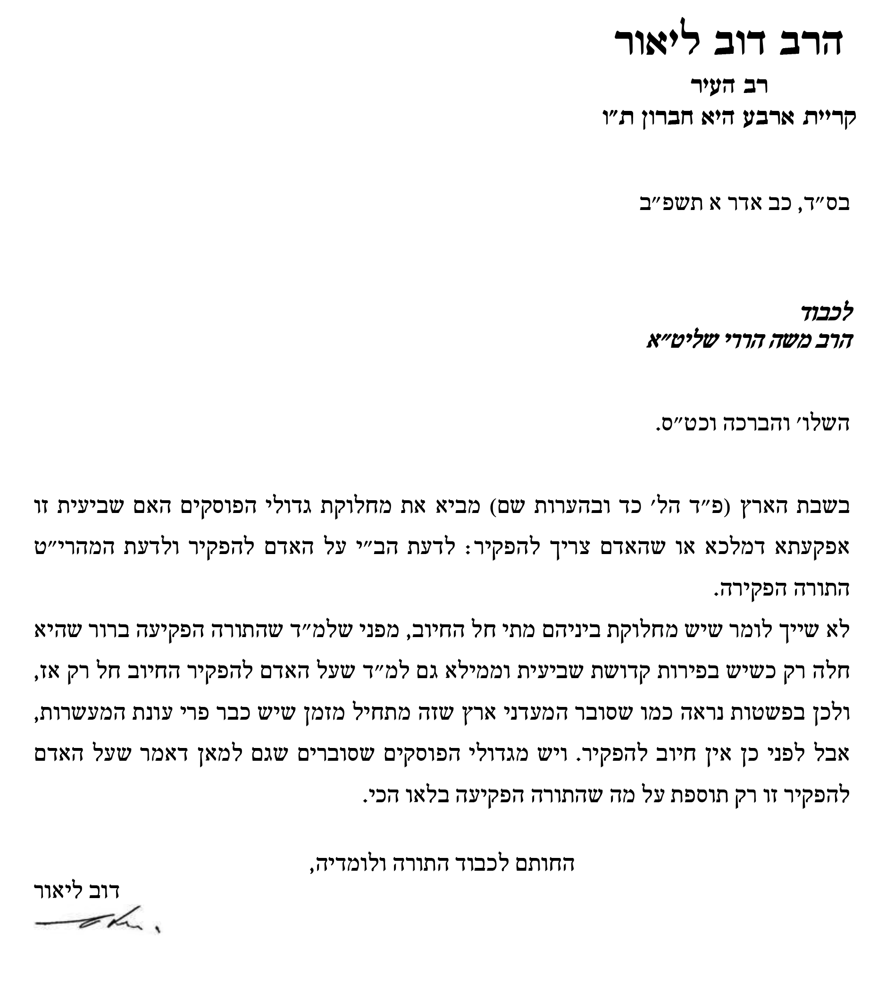
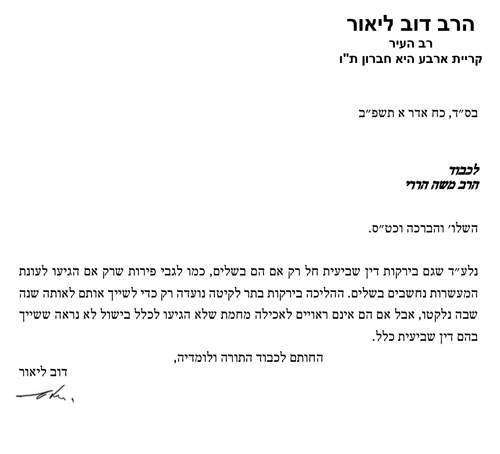

בס"ד ליל כ' אדר א' תשפ"ב
לכבוד מורנו ורבנו
הרב הגדול, מעוז ומגדול,
סוע"ה וטוחנן זב"ז,
הג"ר דב ליאור שליט"א
רב העיר קרית ארבע היא חברון תובב"א
רצינו לשאול ממתי חלה חובת ההפקרה של היבולים בשדה. דמלשון רבנו הרמב"ם, הן ביד החזקה (שמיטה ד', כ"ד), שכתב ש"מצות עשה להשמיט כל מה שתוציא הארץ בשביעית. וכל הנועל כרמו או סג שדהו בשביעית ביטל מ"ע... אלא יפקיר הכל" - משמע שכבר מתחילת השביעית חלה חובת ההפקרה ליבולים. וכן מתבאר גם מדבריו בסה"מ (מצווה קל"ד), שכתב שמצווים אנו להפקיר כל מה שתצמיח הארץ בשנת השמיטה, והפקיר צמחי אדמתנו כולם לכל אדם... כל מה שיצמח בשנה השביעית. עכ"ל.
ולכאו' עולה מכל זה, שכל פרי שגדל בשמיטה, אע"פ שחנט לפני השמיטה, ואין לו קדושת שביעית, אפ"ה חלה עליו חובת הפקר.
ומאידך מצינו שהתייחסו לכך שניים מגדולי האחרו', הלא המה הגר"מ קליערס זצ"ל מטבריה, בעהמח"ס תורת הארץ, והגרש"ז אוירבך זצ"ל. שבס' תורת הארץ כתב (בפ"ח סעי' כ"ב-כ"ב), שרק משעה שחלה קדו"ש על הפרי - רק אז חלה חובת ההפקר. ע"כ. והגרשז"א אוירבך זצ"ל במעדנ"א (שביעית. סי' ה' סק"ו ד"ה "ואף") כ' שברור שהפקירא דשביעית מתחיל רק בשעת חנטה או בשעת הבאת שליש. עכת"ד.
ולפי דבריהם עולה שרק משעה שחלה קדו"ש על הפרי חלה גם חובת ההפקרה, ועד אז אין לאף אחד רשות להכנס לכרם, למטע ולגינה, וליקח את פירות השביעית. ולפי"ז טועים אותם החושבים שכבר מתחילת שנת השמיטה, עליהם לפתוח את דלת גינתם ולתת לכל אחד רשות להכנס לגינתם.
לאור זאת ילמדנו רבנו מהי לדעתו ההבנה הנכונה - ממתי חלה חובת ההפקרה על היבולים, ושכמ"ה.
בברכת התורה
מ. הררי
מרכז הרב
ירושלים ת"ו
תשובה:

והוספנו לשאול:
בס"ד לכבוד מורנו הגר"ד ליאור שליט"א
בהמשך למכתב הקודם בענין זמן הפקרת יבולי השביעית
כת"ר שליט"א התייחס בתשובתו רק לגבי פירות.
רצינו לשאול האם הפקרת יבולי השביעית של ירקות הינה ממש מתחילת השמיטה בגלל שבהם קדושת השביעית הולכת בתר לקיטה.
בברכת התורה
משה הררי
תשובה:
